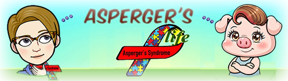
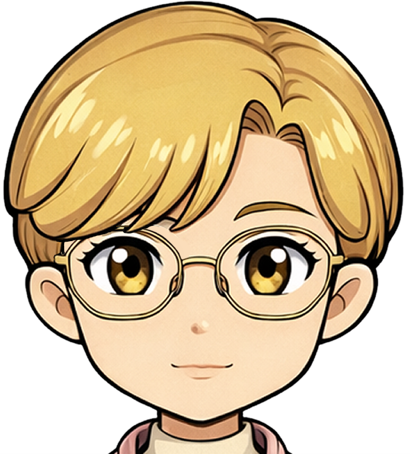

關於我｜About Me
我是一個普通人，成年後才確診 Asperger’s（亞斯伯格症），也是一位自學的漫畫創作者。
我沒有受過專業的美術訓練，平時主要透過電腦繪圖創作。四格漫畫是我最喜歡的表達方式，因為只需要幾個畫面，就能記錄一件事、
一個念頭，甚至是一種說不清 楚的心情。
我的漫畫大多取材自日常生活。
有工作上的人和事，有生活中的小插曲，有情緒、有牢騷，也有一些只有自己才明白的想法。有時候是認真的，有時候是幽默的，偶爾也會帶點無奈。
我習慣觀察身邊的人和事，也常常有自己的想法。只是，很多時候，腦海裡明明有千言萬語，真正要說出口，卻不知道該從哪裡開始。
所以，我選擇用漫畫表達。
對我來說，漫畫不只是畫出角色和場景，更是把腦海裡的想法整理出來，將生活中的經歷轉化成看得見的故事。
我不追求畫出多麼精彩的情節，也不打算把每個故事都寫成勵志篇章。有些事情就是如此，有些感受沒有標準答案，有些生活片段，記錄下來就已經足夠。
創作的過程並不總是順利，有時靈感很多，有時停滯不前；有時對自己的作品很滿意，有時也會懷疑自己。
但我還是繼續創作。
這裡沒有刻意塑造的完美人生，也沒有想要說服誰的道理。只有一個普通人，透過漫畫記錄生活、表達想法，也慢慢認識自己。
如果你喜歡這些漫畫，或者在某些故事裡看見了自己的影子，歡迎來到我的小小創作世界。
這裡是我的生活，也是我的故事。
I’m an ordinary person who was diagnosed with Asperger’s as an adult,
and a self-taught comic creator.
I have no formal art training. I create my comics digitally, and
four-panel comics have become my favourite way of expressing myself.
Sometimes, just a few frames are enough to capture an everyday moment, a
passing thought or a feeling that is difficult to put into words.
Most of my comics are inspired by real life.
They are about work, everyday encounters, little incidents, emotions,
occasional frustrations and thoughts that might only make sense to me.
Some are serious, some are humorous, and others come with a fair bit of
irony.
I tend to observe the people and things around me, and I often have my
own opinions. The trouble is, I sometimes have a thousand thoughts
running through my head but struggle to find the right words to express
them.
That’s why I turn to comics.
For me, creating comics is about more than drawing characters and
scenes. It gives me a way to organise my thoughts, make sense of
everyday experiences and turn them into something I can share.
I’m not trying to create extraordinary stories or turn every experience
into an inspirational lesson. Some things are simply what they are. Not
every feeling has an answer, and sometimes an ordinary moment is worth
recording just as it is.
Creating isn't always easy. There are times when ideas come naturally,
and others when everything seems to stand still. Sometimes I'm pleased
with what I've made; at other times, I question my own work.
But I keep creating.
There is no carefully crafted perfect life here, and I'm not here to
tell anyone how to live. Just an ordinary person using comics to record
life, express thoughts and understand herself a little better along the
way.
If you enjoy my comics, or happen to recognise a little of yourself in
some of these stories, you're welcome to explore my little corner of the
world.
This is my life, and these are my stories.